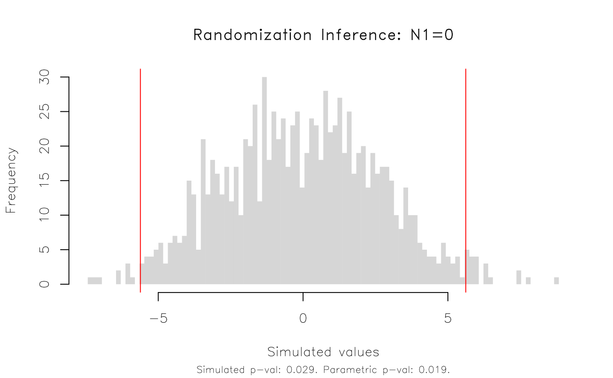
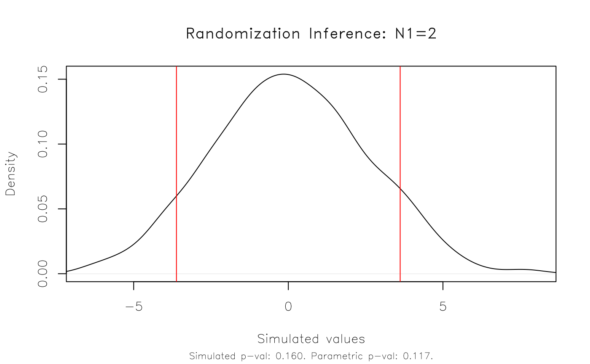
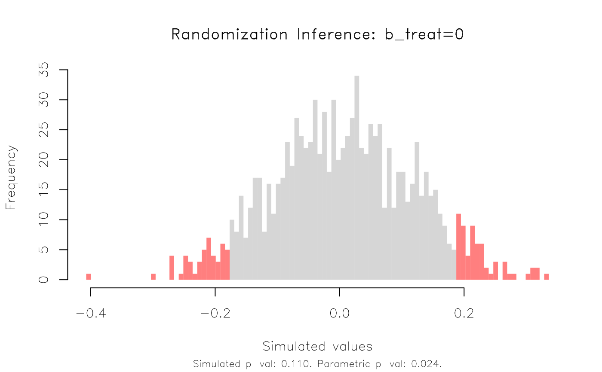
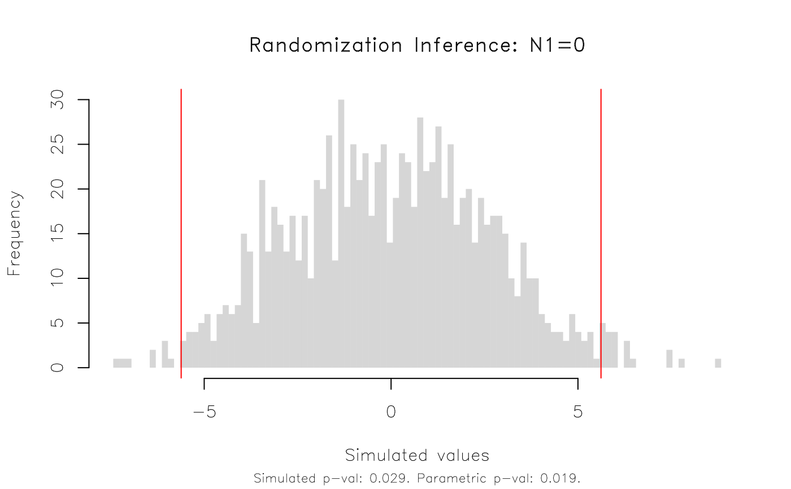
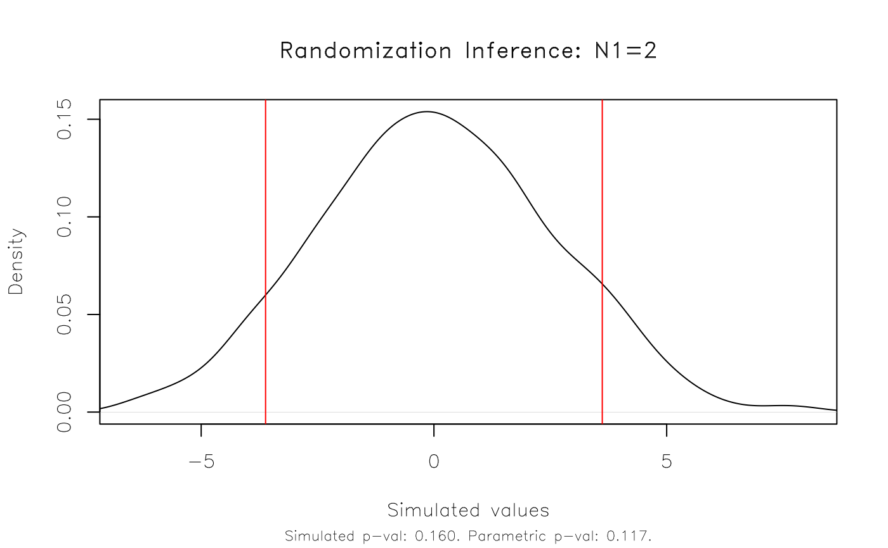
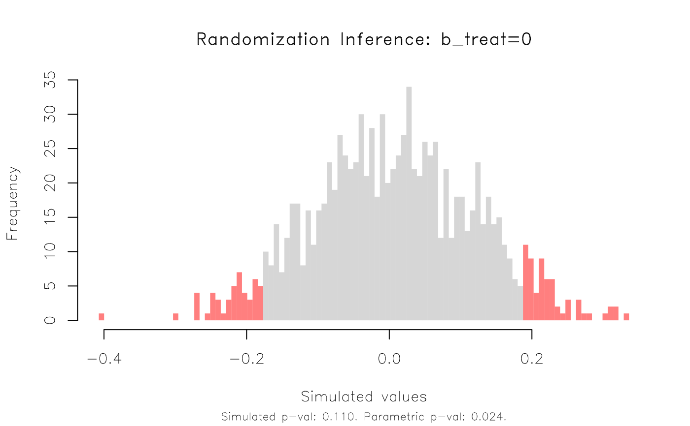

Perform randomization inference (RI) testing on a model object, e.g. a coefficient from a linear regression model. It tries to mimic the `-ritest-` Stata routine (Heß, 2017) in its design and functionality. The package is quite experimental and only a subset of this functionality is currently supported. However, it does appear to be significantly faster.
Usage
ritest(
object,
resampvar,
reps = 100,
strata = NULL,
cluster = NULL,
level = 0.95,
parallel = TRUE,
ptype = c("auto", "fork", "psock"),
pcores = NULL,
stack = NULL,
stack_lim = 1L,
seed = NULL,
pb = FALSE,
verbose = FALSE,
...
)Arguments
- object
Model object containing the `resampvar` variable. At present, only `stats::lm` and `fixest::feols` models are supported.
- resampvar
The variable (coefficient) that you want to perform RI on. Can be provided as a bare (unquoted) variable name, a character string, or a one-sided formula. By default, the RI procedure will conduct a standard two-sided test against a sharp null hypothesis of zero (i.e. H0: resampvar = 0). Other null hypotheses may be specified as part of a character string. These must take the form of the resampled variable, followed by an (in)equality sign, and then a number. For example 'x>=0' or 'x<=0' would yield respective one-sided tests against the zero null. Similarly, you can test against values other than zero (e.g. 'x=1' or 'x>=1'). However, note that multiple multiple comparison tests (e.g. 'x1-x2=0') are not yet supported. See Examples.
- reps
Integer. The number of repetitions (permutation draws) in the RI simulation. Default is 100, but you probably want more that that. Young (2019) finds that rejection rates stabilise at around 2,000 draws.
- strata
Permute `resampvar` within strata (AKA blocks)? Can be provided as a bare variable name, character string, or one-sided formula. See Details and Examples below.
- cluster
Keep `resampvar` constant within clusters? Can be provided as a bare variable name, character string, or one-sided formula. See Details and Examples below.
- level
Numeric. The desired confidence level. Default if 0.95.
- parallel
Logical. Should the permuted fits be executed in parallel? Default is TRUE, with additional options being passed to the `ptype` and `pcores` arguments.
- ptype
Character. What type of parallel strategy should be used? The default behaviour on Linux and Mac is parallel forking ("fork"), while on Windows it will revert to parallel sockets ("psock"). Note that forking is more efficient, but unavailable on Windows.
- pcores
Integer. How many parallel cores should be used? If none is provided, then it will default to half of the total available CPU cores on the user's machine.
- stack
Logical. Should the permuted data be stacked in memory all at once, rather than being recalculated during each iteration? Stacking takes advantage of vectorisation and is thus more efficient. (It also helps to ensure reproducibility when the results are being generated in parallel — see the note on random-number generation below.) But it does require additional memory. If no explicit choice is provided, then the function will automatically stack as long this implies an additional memory overhead less than the `stack_lim` argument. Note that stacking is only relevant if at least one of `strata` or `cluster` are defined.
- stack_lim
Numeric. What is the memory limit (in gigabytes) for determining whether the permuted data should be stacked in memory ahead of time? Default is 1 GB. You probably want to increase this if you are working with a large dataset and have lots of RAM.
- seed
Integer. Random seed for reproducible results. Note that the choice of parallel behaviour can alter results even when using the same seed. See the Note on random number generation below.
- pb
Logical. Display a progress bar? Default is FALSE. Progress bars can add a surprising amount of computational overhead to iterative functions. I've therefore set the number of updating steps — i.e. via the `nout` argument of [pbapply::pboptions()] — to 5, which should limit this kind of overhead in the event that a user invokes the `pb = TRUE` argument.
- verbose
Logical. Display the underlying model `object` summary and `ritest` return value? Default is `FALSE`.
- ...
Additional arguments. Currently ignored.
Details
This function is experimental and functionality is still quite limited. Albeit, that it does support the most likely use case for RI on a regression model, i.e. permutation testing of a coefficient value. Present limitations include: only `lm` and `fixest::feols` model objects are supported; only one permutation (RI) test is allowed; and only one strata and/or cluster variable, respectively, can be supplied. I hope to resolve these limitations as time permits.
Note
The use of parallelism in computation introduces some well-known complications with respect to random number generation (RNG). See the vignette accompanying the `parallel` package for more discussion. The `ritest()` function adopts various best practices to facilitate reliably reproducible results, irrespective of the choice of parallel strategy. These include the use of "L'Ecuyer-CMRG" RNG kind and the default behaviour of "stacking" the permuted results in memory before passing them on to the fitting stage of the randomization inference routine (where the fitting would still be done in parallel). To briefly dwell on the latter, note that this stacking behaviour is very similar to — I nearly wrote "parallels" — the approach adopted by `boot` and other packages that trade off RNG with parallelism and reproducibility. In the phrasing of the `parallel` vignette: "One way to avoid any difficulties is (where possible) to do all the randomization in the master process" (p. 5).
The upshot is that running `ritest()` under a given set of arguments should generally yield the same, reproducible results regardless of when or where they were run. This should be true even if users turn the default parallel behaviour of the function off or back on, or whether they change the `ptype` argument to "psock" or "fork" and back again. However, it cannot be guaranteed under every scenario. Perhaps the most obvious case is when `ritest()` is run without any declared strata or clusters. (Reason: Stacking in this simple case is turned off because it yields no efficiency gains.) In this case, the RNG stream will be sensitive to the _number_ of available cores on a user's computer. Two parallel cores will yield a slightly different result than four cores, or six cores, etc. Of course, users can always ensure perfect reproducibility by explicitly defining the number of required cores in the `ritest()` call via the `pcores` argument. Stepping back, the focus on reproducible exactitude rather misses the point in an exercise like randomization inference testing. Much more important is running enough permutation trials so that your rejection rates are stable and any minor differences due to different RNG seeds are moot. Remember, the ultimate goal of inference (and research) isn't simply to generate reproducible results under a very specific set of circumstances. Rather, it is to generate consistent insights that hold even under varying circumstances.
References
Simon Heß (2017). Robust Randomization inference with Stata: A guide and software, The Stata Journal, 17, Number 3, pp. 630–651
Alwyn Young (2019). Channeling Fisher: Randomization Tests and the Statistical Insignificance of Seemingly Significant Experimental Results, The Quarterly Journal of Economics, 134, Issue 2, pp. 557–598
Examples
#
## Example 1: Basic functionality
#
# First estimate a simple linaer regression on the base 'npk' dataset. For
# this first example, we won't worry about strata or clusters, or other
# experimental design complications.
est = lm(yield ~ N + P + K, data = npk)
# Conduct RI on the 'N' (i.e. nitrogen) coefficient. We'll do 1,000
# simulations and, just for illustration, limit the number of parallel cores
# to 2 (default is half of the available cores). The 'verbose = TRUE'
# argument simply prints the results upon completion, including the original
# regression model summary.
est_ri = ritest(est, 'N', reps = 1e3, seed = 1234L, verbose = TRUE)
#>
#> Running 1000 parallel RI simulations as forked processes across 2 CPU cores.
#>
#> ******************
#> * ORIGINAL MODEL *
#> ******************
#>
#> Call:
#> lm(formula = yield ~ N + P + K, data = npk)
#>
#> Residuals:
#> Min 1Q Median 3Q Max
#> -9.2667 -3.6542 0.7083 3.4792 9.3333
#>
#> Coefficients:
#> Estimate Std. Error t value Pr(>|t|)
#> (Intercept) 54.650 2.205 24.784 <2e-16 ***
#> N1 5.617 2.205 2.547 0.0192 *
#> P1 -1.183 2.205 -0.537 0.5974
#> K1 -3.983 2.205 -1.806 0.0859 .
#> ---
#> Signif. codes: 0 ‘***’ 0.001 ‘**’ 0.01 ‘*’ 0.05 ‘.’ 0.1 ‘ ’ 1
#>
#> Residual standard error: 5.401 on 20 degrees of freedom
#> Multiple R-squared: 0.3342, Adjusted R-squared: 0.2343
#> F-statistic: 3.346 on 3 and 20 DF, p-value: 0.0397
#>
#>
#> ******************
#> * RITEST RESULTS *
#> ******************
#>
#> Call: lm(formula = yield ~ N + P + K, data = npk)
#> Res. var(s): N1
#> H0: N1=0
#> Num. reps: 1000
#> ────────────────────────────────────────────────────────────────────────────────
#> T(obs) c n p=c/n SE(p) CI 2.5% CI 97.5%
#> 5.617 21 1000 0.021 0.007462 0.008726 0.03327
#> ────────────────────────────────────────────────────────────────────────────────
#> Note: Confidence interval is with respect to p=c/n.
#> Note: c = #{|T| >= |T(obs)|}
#>
# Result: The RI rejection rate (0.021) is very similar to the parametric
# p-value (0.019).
# We can plot the results and various options are available to customise the appearance.
plot(est_ri)
 plot(est_ri, type = 'hist')

# etc
# Aside: By default, ritest() conducts a standard two-sided test against a
# sharp null hypothesis of zero. You can can specify other null hypotheses as
# part of the 'resampvar' string argument. For example, a (left) one-sided
# test...
plot(ritest(est, 'N<=0', reps = 1e3, seed = 1234L, pcores = 2L))
# ... or, null values different from zero.
plot(ritest(est, 'N=2', reps = 1e3, seed = 1234L, pcores = 2L))

#
## Example 2: Real-life example
#
# Now that we've seen the basic functionality, here's a more realistic RI
# example using data from a randomized control trial conducted in Colombia.
# More details on the dataset -- kindly provided by the study authors -- can
# be found in the accompanying helpfile ("?colombia"). The most important
# thing to note is that we need to control for the stratified (aka "blocked")
# and clustered experimental design.
data("colombia")
# We'll use the fixest package to estimate our parametric regression model,
# specifying the strata (here: treatment-control pairs) as fixed-effects and
# clustering the standard errors by location (here: city blocks).
library(fixest)
co_est = feols(dayscorab ~ b_treat + b_dayscorab + miss_b_dayscorab |
b_pair + round2 + round3,
vcov = ~b_block, data = colombia)
#> NOTE: 1,020 observations removed because of NA values (LHS: 1,020).
co_est
#> OLS estimation, Dep. Var.: dayscorab
#> Observations: 2,346
#> Fixed-effects: b_pair: 31, round2: 2, round3: 2
#> Standard-errors: Clustered (b_block)
#> Estimate Std. Error t value Pr(>|t|)
#> b_treat -0.180738 0.078174 -2.31201 0.024113 *
#> b_dayscorab 0.524761 0.029423 17.83478 < 2.2e-16 ***
#> miss_b_dayscorab 0.603928 0.264174 2.28610 0.025678 *
#> ---
#> Signif. codes: 0 '***' 0.001 '**' 0.01 '*' 0.05 '.' 0.1 ' ' 1
#> RMSE: 1.91167 Adj. R2: 0.282038
#> Within R2: 0.266002
# Run RI on the 'b_treat' variable, specifying the strata and clusters.
# All three input styles work: bare names, strings, or formulas.
co_ri = ritest(co_est, b_treat, strata = b_pair, cluster = b_block,
reps=1e3, seed=123L)
co_ri
#>
#> Call: feols(fml = dayscorab ~ b_treat + b_dayscorab + miss_b_dayscorab | b_pair + round2 + round3, data = colombia, vcov = ~b_block)
#> Res. var(s): b_treat
#> H0: b_treat=0
#> Strata var(s): b_pair
#> Strata: 31
#> Cluster var(s): b_block
#> Clusters: 63
#> Num. reps: 1000
#> ────────────────────────────────────────────────────────────────────────────────
#> T(obs) c n p=c/n SE(p) CI 2.5% CI 97.5%
#> -0.1807 110 1000 0.11 0.01628 0.08322 0.1368
#> ────────────────────────────────────────────────────────────────────────────────
#> Note: Confidence interval is with respect to p=c/n.
#> Note: c = #{|T| >= |T(obs)|}
#>
plot(co_ri, type = 'hist', highlight = 'fill')

# This time, the RI rejection rate (0.11) is noticeably higher than the
# parametric p-value (0.024) from the regression model.
plot(est_ri, type = 'hist')

# etc
# Aside: By default, ritest() conducts a standard two-sided test against a
# sharp null hypothesis of zero. You can can specify other null hypotheses as
# part of the 'resampvar' string argument. For example, a (left) one-sided
# test...
plot(ritest(est, 'N<=0', reps = 1e3, seed = 1234L, pcores = 2L))
# ... or, null values different from zero.
plot(ritest(est, 'N=2', reps = 1e3, seed = 1234L, pcores = 2L))

#
## Example 2: Real-life example
#
# Now that we've seen the basic functionality, here's a more realistic RI
# example using data from a randomized control trial conducted in Colombia.
# More details on the dataset -- kindly provided by the study authors -- can
# be found in the accompanying helpfile ("?colombia"). The most important
# thing to note is that we need to control for the stratified (aka "blocked")
# and clustered experimental design.
data("colombia")
# We'll use the fixest package to estimate our parametric regression model,
# specifying the strata (here: treatment-control pairs) as fixed-effects and
# clustering the standard errors by location (here: city blocks).
library(fixest)
co_est = feols(dayscorab ~ b_treat + b_dayscorab + miss_b_dayscorab |
b_pair + round2 + round3,
vcov = ~b_block, data = colombia)
#> NOTE: 1,020 observations removed because of NA values (LHS: 1,020).
co_est
#> OLS estimation, Dep. Var.: dayscorab
#> Observations: 2,346
#> Fixed-effects: b_pair: 31, round2: 2, round3: 2
#> Standard-errors: Clustered (b_block)
#> Estimate Std. Error t value Pr(>|t|)
#> b_treat -0.180738 0.078174 -2.31201 0.024113 *
#> b_dayscorab 0.524761 0.029423 17.83478 < 2.2e-16 ***
#> miss_b_dayscorab 0.603928 0.264174 2.28610 0.025678 *
#> ---
#> Signif. codes: 0 '***' 0.001 '**' 0.01 '*' 0.05 '.' 0.1 ' ' 1
#> RMSE: 1.91167 Adj. R2: 0.282038
#> Within R2: 0.266002
# Run RI on the 'b_treat' variable, specifying the strata and clusters.
# All three input styles work: bare names, strings, or formulas.
co_ri = ritest(co_est, b_treat, strata = b_pair, cluster = b_block,
reps=1e3, seed=123L)
co_ri
#>
#> Call: feols(fml = dayscorab ~ b_treat + b_dayscorab + miss_b_dayscorab | b_pair + round2 + round3, data = colombia, vcov = ~b_block)
#> Res. var(s): b_treat
#> H0: b_treat=0
#> Strata var(s): b_pair
#> Strata: 31
#> Cluster var(s): b_block
#> Clusters: 63
#> Num. reps: 1000
#> ────────────────────────────────────────────────────────────────────────────────
#> T(obs) c n p=c/n SE(p) CI 2.5% CI 97.5%
#> -0.1807 110 1000 0.11 0.01628 0.08322 0.1368
#> ────────────────────────────────────────────────────────────────────────────────
#> Note: Confidence interval is with respect to p=c/n.
#> Note: c = #{|T| >= |T(obs)|}
#>
plot(co_ri, type = 'hist', highlight = 'fill')

# This time, the RI rejection rate (0.11) is noticeably higher than the
# parametric p-value (0.024) from the regression model.